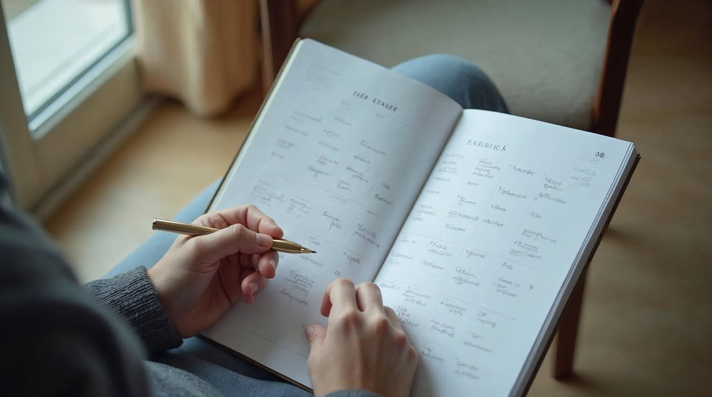
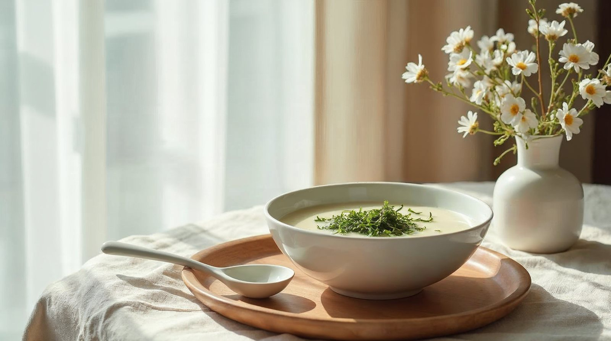

이종호 한의사 감수좋은꿈참사랑한의원 대표원장 (한의사 면허번호 19769)발행 2026-11-24 · 수정 2026-11-27
이 글의 차례
- 왜 이런 불편이 생길 수 있나요
- 왜 잠이 조각나면 마음이 먼저 지칠까요?
- 잠깐 지나가는 감정 변화와 산후 우울은 어떻게 다른가요?
- 먼저 이렇게 여쭙니다
- 일상에서 먼저 해 볼 수 있는 것
- 하루 한 번 이어서 자는 시간, 어떻게 만들까요?
- 끼니는 어떻게 챙기면 좋을까요?
- 몸의 통증도 마음을 무겁게 하나요?
- 하루 10분, 엄마만의 시간을 남겨 두세요
- 가족은 곁에서 이렇게 도와주세요
- 한의원에서 함께 살필 수 있는 경우
- 예를 들어 이런 경우가 있습니다
- 엄마로서 부족하다는 생각이 자꾸 들 때는요?
- 자주 하는 오해
- 스스로 점검해 보세요
- 얼마나 지켜보고 언제 상담할까요
- 처음 오시면 이런 순서로 진료합니다
- 이렇게 기록해 오시면 상담이 쉬워집니다
- 이런 증상은 먼저 확인이 필요합니다
- 관련 글
새벽 세 시, 아기에게 젖병을 물리고 어두운 거실에 앉아 있습니다. 아기는 다시 잠들었는데 이상하게 눈물이 멈추지 않습니다. 슬픈 일이 있었던 것도 아닌데, 이렇게 예쁜 아기를 두고 왜 울고 있는지 스스로도 설명이 되지 않아 더 마음이 무거워집니다.
아기가 태어났는데 마음이 가라앉고 이유 없이 눈물이 나는 것은 이상한 일이 아닙니다. 출산 뒤 몸과 생활이 한꺼번에 바뀌는 시기라 많은 분이 겪으며, 도움을 받아도 괜찮습니다. 다만 스스로를 해칠 생각이나 아기를 해칠 것 같은 생각이 들면 혼자 있지 말고 지체 없이 109나 가까운 응급실에 도움을 요청하세요.
왜 이런 불편이 생길 수 있나요
- 출산 뒤 호르몬이 크게 바뀌면서 감정이 흔들리기 쉬운 시기가 옵니다.
- 밤낮없는 수유와 돌봄으로 잠이 조각나면 마음도 쉽게 지칩니다.
- 출산 뒤 몸의 회복이 더딘데 해야 할 일은 많아 부담이 쌓입니다.
- 도움을 받을 사람이 적거나 혼자 완벽하게 해내려 할수록 더 힘들어질 수 있습니다.
왜 잠이 조각나면 마음이 먼저 지칠까요?
잠은 하루 동안 쌓인 몸의 피로뿐 아니라 마음의 무게도 내려놓는 시간입니다. 두세 시간마다 깨는 밤이 몇 주씩 이어지면, 몸은 물론이고 작은 일에도 눈물이 나거나 짜증이 올라오는 등 감정을 다루는 힘이 먼저 줄어들기 쉽습니다.
여기에 출산으로 몸이 회복하는 중이라는 점이 겹칩니다. 출혈과 상처, 젖몸살, 손목과 허리 통증을 안은 채로 아기를 돌보다 보면, 쉬어야 할 몸이 쉬지 못한 채 하루가 흘러갑니다. 한의학에서는 출산 뒤를 기혈이 많이 소모된 시기로 보고, 이때 잠과 식사가 흔들리면 마음도 쉽게 흔들린다고 설명합니다.
그래서 저는 마음 이야기를 듣기 전에 먼저 몸을 여쭙습니다. 이어서 잔 시간이 얼마나 되는지, 끼니를 앉아서 드시는지, 몸이 따뜻한지를 알면 어디부터 손을 보태야 할지가 보이기 때문입니다.
잠깐 지나가는 감정 변화와 산후 우울은 어떻게 다른가요?
출산 뒤 며칠 사이에 웃다가도 갑자기 눈물이 나고, 사소한 말에 서운해지는 일은 많은 분이 겪습니다. 이런 감정의 오르내림은 대개 잠을 조금씩 이어 자고 몸이 회복되면서 차츰 옅어지는 흐름을 보입니다.
산후 우울은 모양이 조금 다릅니다. 슬픔이 오르내리기보다 바닥에 깔린 채 이어지고, 아기가 자는 시간에도 잠들지 못하며, 예전에 좋아하던 일에도 마음이 움직이지 않습니다. 나는 좋은 엄마가 아니라는 생각, 모든 것이 내 탓이라는 생각이 자주 드는 것도 특징으로 알려져 있습니다.
둘 사이를 스스로 가르기는 쉽지 않습니다. 날마다 마음의 무게를 0에서 10까지 숫자로 짧게 적어 두면, 흐름이 가벼워지는 쪽인지 무거워지는 쪽인지 보이기 시작하고 진료실에서도 이야기가 구체적이 됩니다.
먼저 이렇게 여쭙니다
- 마음이 가라앉은 것이 언제부터이고 얼마나 이어졌나요?
- 잠은 하루 몇 시간 자고, 아기가 자도 잠들지 못하나요?
- 도움을 받을 사람이 있나요?
- 식욕과 의욕, 아기에 대한 마음은 어떤가요?
일상에서 먼저 해 볼 수 있는 것
- 가족이나 친구에게 힘든 점을 이야기하고 돌봄을 나누기
- 아기가 잘 때 같이 눕기
- 햇빛을 쬐며 가볍게 걷기
- 하루 일과 가운데 미뤄도 되는 집안일은 과감히 미뤄 두기
- 끼니를 거르지 않고 따뜻한 식사 챙기기
- 혼자 완벽하려고 애쓰지 않기
하루 한 번 이어서 자는 시간, 어떻게 만들까요?
밤새 혼자 아기를 돌보면 이어서 자는 시간이 한 시간도 안 되는 날이 생깁니다. 하루에 한 번이라도 네다섯 시간을 이어서 잘 수 있도록 가족과 밤을 나눠 보세요. 예를 들어 밤 아홉 시부터 새벽 두 시까지는 엄마가 먼저 자고, 그사이 깨는 아기는 가족이 달래는 식입니다.
수유를 어떻게 나눌지는 수유 방법에 따라 달라지므로 산부인과나 소아청소년과와 상의해 정하시면 좋습니다. 정해 둔 시간만큼은 가족을 믿고 맡겨 보세요. 엄마가 자는 동안에는 방문을 닫고 휴대전화 알림을 꺼 두어, 아기 울음소리에 반쯤 깨어 있는 잠이 되지 않도록 해 주세요.
낮에 찾아오는 손님은 잠시 미뤄도 괜찮습니다. 아기를 보러 오는 방문이 이어지면 엄마는 쉴 틈 없이 웃으며 맞이하게 되기 쉽습니다. 지금은 내 잠을 먼저 지키는 것이 아기를 돌보는 일과도 이어져 있다고 생각해 주세요.
끼니는 어떻게 챙기면 좋을까요?
아기를 안고 있다 보면 밥 한 숟가락 뜰 틈이 없어, 식은 밥을 서서 몇 술 뜨고 지나가는 날이 많습니다. 빈속이 길어지면 기운이 떨어지고 마음도 쉽게 가라앉기 쉬워, 저는 거창한 식사보다 끊기지 않는 식사를 먼저 권합니다.
한 손으로 먹을 수 있는 주먹밥, 데우기만 하면 되는 국과 죽, 삶은 달걀과 바나나처럼 미리 준비해 두기 쉬운 것을 손 닿는 곳에 두세요. 수유를 하는 분이라면 수유할 때마다 옆에 물 한 컵을 두고 마시는 습관도 도움이 됩니다.
찬 음식보다 따뜻한 국물과 밥을 앉아서 천천히 드시는 시간을 하루 한 번이라도 지켜 보세요. 밥을 먹는 그 몇 분이 하루 중 오롯이 나를 돌보는 시간이 되기도 합니다. 가족이나 가까운 이웃이 반찬을 나눠 주겠다고 하면 사양하지 말고 받아 두세요. 냉동실에 국 몇 그릇만 있어도 힘든 날의 한 끼가 훨씬 수월해집니다.
몸의 통증도 마음을 무겁게 하나요?
출산 뒤에는 아기를 안고 젖을 먹이느라 손목과 어깨, 허리가 하루 종일 쉬지 못합니다. 아픈 몸으로 하루를 버티다 보면 웃을 여유가 줄고, 작은 일에도 지치고 서러운 마음이 커지기 쉽습니다.
아기를 안을 때는 팔 힘만 쓰지 말고 아기를 몸 가까이 붙여 안고, 수유할 때는 쿠션을 받쳐 허리와 팔의 부담을 덜어 보세요. 통증 때문에 잠자리에서 자주 뒤척인다면 그 이야기도 진료 때 함께 들려주세요. 몸이 조금 편해지면 마음을 돌볼 여력도 함께 생기는 경우가 많습니다.
하루 10분, 엄마만의 시간을 남겨 두세요
아기가 태어난 뒤로 혼자 있는 시간이 하루에 몇 분도 안 된다는 분이 많습니다. 가족에게 아기를 맡기고 햇빛이 드는 시간에 동네를 10분쯤 걷거나, 문을 닫고 따뜻한 물로 천천히 씻는 시간만으로도 숨이 조금 트인다고들 하십니다.
이 시간에는 육아 정보를 검색하거나 다른 집 아기와 비교하는 글을 읽지 말고, 바깥 공기와 내 발걸음에만 마음을 두어 보세요. 엄마가 잠시 쉬는 것은 아기를 소홀히 하는 일이 아니라, 다시 돌아와 아기를 안을 힘을 채우는 일입니다.
가족은 곁에서 이렇게 도와주세요
힘들다는 말을 들었을 때 "다들 그렇게 키워", "아기가 이렇게 예쁜데 왜 그래"라는 말은 위로가 되기 어렵습니다. 해결책을 내놓기보다 "많이 힘들었지", "오늘은 내가 볼게"처럼 마음을 알아주는 말과 손이 먼저 닿는 것이 큰 힘이 됩니다.
설거지, 빨래, 장보기처럼 눈에 보이는 일을 묻지 말고 먼저 맡아 주세요. 엄마가 혼자 끼니를 서서 때우지 않도록 따뜻한 밥 한 끼를 차려 두는 것, 햇빛이 좋은 시간에 잠깐 혼자 걷고 올 수 있도록 아기를 맡아 주는 것도 좋습니다.
엄마의 표정이 며칠째 어둡거나 말수가 눈에 띄게 줄었다면, 가족이 먼저 진료를 권하고 함께 가 주는 것도 도움이 됩니다. 혼자서는 병원 문을 열 힘조차 나지 않는 시기가 있기 때문입니다.
한의원에서 함께 살필 수 있는 경우
- 출산 뒤 잠이 얕고 몸이 늘 지쳐 있는 경우 잠과 기력, 몸의 온기를 함께 살핍니다.
- 수유와 돌봄으로 손목·허리가 아프고 몸이 무거운 경우 통증과 회복을 함께 살핍니다.
- 식욕이 없고 소화가 잘 안 되는 경우 식사와 소화를 함께 살핍니다.
좋은꿈참사랑한의원에서는 출산 뒤의 몸과 마음 이야기를 먼저 충분히 듣고 몸 상태를 함께 살핍니다. 우울감이 깊거나 오래가면 산부인과 진료를 함께 안내합니다.

예를 들어 이런 경우가 있습니다
- 예를 들어 출산 뒤 2주 안쪽에 이유 없이 눈물이 나다가 잠을 조금씩 이어 자면서 차츰 가라앉는 경우가 있습니다. 이런 흐름은 출산 뒤 흔히 지나가는 감정 변화일 수 있어, 눈물이 나는 날과 잠든 시간을 짧게 적어 두며 흐름을 지켜보셔도 좋습니다.
- 예를 들어 출산 뒤 한 달이 지났는데도 아기가 자는 시간에 잠들지 못하고, 아무것도 즐겁지 않은 날이 대부분인 경우에는 단순한 피로로만 넘기지 말고 산부인과 상담을 먼저 받아 보시길 권합니다.
- 예를 들어 친정과 멀리 떨어져 혼자 아기를 돌보며 끼니를 서서 때우는 날이 이어지는 경우, 마음보다 먼저 몸이 지쳐 있을 수 있어 돌봄을 나눌 사람과 식사 시간을 함께 정리해 보는 것이 첫걸음이 될 수 있습니다.
엄마로서 부족하다는 생각이 자꾸 들 때는요?
출산 뒤 마음이 힘든 분들이 가장 많이 털어놓는 생각 가운데 하나가, 내가 엄마 자격이 없는 것 같다는 마음입니다. 다른 엄마들은 다 잘하는 것 같은데 나만 서툴고, 아기가 울 때마다 내가 뭘 잘못했나 싶어 마음이 내려앉는다는 것이지요. 이런 생각은 내가 정말 부족해서라기보다, 잠이 모자라고 몸이 지친 시기에 누구에게나 찾아올 수 있는 마음입니다.
출산 뒤 몇 달은 누구에게나 처음 해 보는 일의 연속입니다. 휴대전화 속 다른 집 육아는 가장 좋은 순간만 골라 보여 주는 경우가 많아, 내 하루의 가장 힘든 순간과 나란히 놓으면 누구라도 부족하게 느껴질 수밖에 없습니다.
오늘 하루 아기를 먹이고 재우고 안아 준 일을 잠들기 전에 한두 줄 적어 보세요. 잘하지 못한 일보다 해낸 일을 눈으로 확인하는 작은 습관이, 그리고 그 기록을 가족과 함께 읽어 보는 시간이, 스스로를 탓하는 생각의 무게를 조금 덜어 줄 수 있습니다. 그래도 그런 생각이 하루 대부분을 차지한다면 혼자 견디지 말고 진료실에서 이야기해 주세요.
자주 하는 오해
- "엄마라면 다 견디는 일"이라는 생각에 참기만 하는 분이 많지만, 출산 뒤 마음이 힘든 것은 의지가 약해서가 아니며 도움을 받는 것도 돌봄의 한 방법입니다.
- 수유 중이라 아무 진료도 받을 수 없다고 여기기 쉽지만, 수유 여부를 먼저 알려 주시면 상담과 치료 방법을 그에 맞춰 신중하게 정할 수 있습니다.
- 잠은 아기가 크면 저절로 돌아온다고 미루기 쉽지만, 하루 한 번이라도 이어서 잘 수 있는 시간을 가족과 함께 만들어 보는 것이 마음을 돌보는 데 도움이 될 수 있습니다.

스스로 점검해 보세요
- 출산 뒤 마음이 가라앉은 날이 그렇지 않은 날보다 많다
- 아기가 자는 동안에도 잠들지 못하거나 자주 깬다
- 끼니를 거르거나 입맛이 크게 달라졌다
- 예전에 좋아하던 일에 관심이 거의 없어졌다
- 내가 엄마로서 부족하다는 생각이 자주 든다
- 아기와 함께 있어도 마음이 멀게 느껴지고 그런 내가 낯설다
- 힘든 마음을 이야기할 사람이 주변에 없다
두세 가지 이상 해당하거나 날이 갈수록 무거워진다면 혼자 견디지 말고 산부인과 진료를 받아 보시길 권합니다.
얼마나 지켜보고 언제 상담할까요
- 출산 뒤 며칠에서 2주 안쪽에 감정이 오르내리다 점차 가라앉는다면 잠과 식사를 챙기며 지켜보셔도 좋습니다.
- 가라앉는 기분이 옅어지지 않고 점점 깊어지는 쪽이라면 산부인과 상담을 받아 보세요.
- 잠을 거의 못 자는 날이 사흘 넘게 이어진다면 기다리지 말고 산부인과 진료를 받아 보세요.
처음 오시면 이런 순서로 진료합니다
첫 방문에서는 출산일과 출산 방법, 수유 여부, 하루 잠과 식사 이야기를 먼저 듣습니다. 이어서 모든 분께 그렇듯 맥부터 짚고(진맥), 필요하다고 판단될 때 설진·복진과 통증 부위 진찰을 더합니다.
그 뒤 잠을 이어 잘 수 있는 방법과 식사 시간처럼 생활에서 먼저 조정할 것의 순서를 함께 정하고, 침이나 한약 상담은 수유 여부를 확인한 뒤 신중하게 정합니다. 다음 진료에서는 지난번 정한 것을 어떻게 지내셨는지 이어서 여쭙습니다. 진료 시간은 방문 전 전화(02-815-7510)로 확인해 주세요.
이렇게 기록해 오시면 상담이 쉬워집니다
- 출산일과 수유 여부
- 하루 잠든 시간을 모아 적은 수면 기록
- 마음이 가장 힘든 시간대
- 복용 중인 약과 영양제
이런 증상은 먼저 확인이 필요합니다
- 2주 넘게 우울감이 이어지는 경우
- 아기를 돌보기 어렵거나 불안과 걱정이 매우 큰 경우
이런 신호가 있으면 한의원보다 가까운 병원이나 응급실을 먼저 찾으세요.
관련 글

여쭙는 것
- 마음이 가라앉은 것이 언제부터이고 얼마나 이어졌나요?
- 잠은 하루 몇 시간 자고, 아기가 자도 잠들지 못하나요?
- 도움을 받을 사람이 있나요?
생활에서 해 볼 것
- 가족이나 친구에게 힘든 점을 이야기하고 돌봄을 나누기
- 아기가 잘 때 같이 눕기
- 햇빛을 쬐며 가볍게 걷기
한의원에서 함께 살필 것
- 출산 뒤 잠이 얕고 몸이 늘 지쳐 있는 경우 잠과 기력, 몸의 온기를 함께 살핍니다.
- 수유와 돌봄으로 손목·허리가 아프고 몸이 무거운 경우 통증과 회복을 함께 살핍니다.
- 식욕이 없고 소화가 잘 안 되는 경우 식사와 소화를 함께 살핍니다.
먼저 확인이 필요한 신호
- 2주 넘게 우울감이 이어지는 경우
- 아기를 돌보기 어렵거나 불안과 걱정이 매우 큰 경우
한눈에 보는 표
| 구분 | 핵심 |
|---|---|
| 여쭙는 것 | 마음이 가라앉은 것이 언제부터이고 얼마나 이어졌나요? 잠은 하루 몇 시간 자고, 아기가 자도 잠들지 못하나요? |
| 생활에서 해 볼 것 | 가족이나 친구에게 힘든 점을 이야기하고 돌봄을 나누기 아기가 잘 때 같이 눕기 |
| 한의원에서 함께 살필 것 | 출산 뒤 잠이 얕고 몸이 늘 지쳐 있는 경우 잠과 기력, 몸의 온기를 함께 살핍니다. 수유와 돌봄으로 손목·허리가 아프고 몸이 무거운 경우 통증과 회복을 함께 살핍니다. |
| 먼저 확인이 필요한 신호 | 2주 넘게 우울감이 이어지는 경우 아기를 돌보기 어렵거나 불안과 걱정이 매우 큰 경우 |
자주 묻는 질문
산후 우울은 한의원에서도 보나요?
잠과 식사, 몸의 상태를 함께 살피고 우울감이 깊거나 오래가면 산부인과 진료를 권합니다.
수유 중이에요.
수유 중이라는 점을 먼저 알려 주시면 치료 방법과 한약 여부를 더 신중하게 정합니다.
가족은 어떻게 도와주면 좋을까요?
밤 수유나 돌봄을 나눠 엄마가 이어서 잘 수 있는 시간을 만들고, 힘든 마음을 탓하지 않고 들어 주는 것이 큰 도움이 될 수 있습니다.
좋은꿈참사랑한의원은 재진 때 지난번 이야기부터 이어서 여쭙니다. 진료시간과 예약은 오시는 길에서 확인하세요.
어디서 상담받을 수 있나요?
좋은꿈참사랑한의원은 서울 동작구 만양로2길 2 신성빌딩 3층·5층(서울 동작구 상도동, 7호선 상도역 3번 출구 근처)에 있습니다. 한의사 3명(이종호 대표원장, 조영기 수석진료원장, 정원영 진료원장)이 진료합니다. 진료시간은 평일 09:30~20:00(점심 13:00~14:00), 토·일·공휴일 09:30~15:00이며, 방문 전 전화로 확인을 권합니다. 예약은 네이버 예약, 카카오톡 상담, 전화 02-815-7510로 받습니다.
이 글은 일반적인 건강 정보이며 개인의 진단이나 치료를 대신하지 않습니다. 증상이 있거나 복용 중인 약이 있다면 진료를 통해 확인하세요. 치료 효과는 개인마다 다를 수 있습니다.
작성 기준: 일반적으로 알려져 있는 건강 정보를 참고해 정리했습니다(대표원장 감수). 증상 기록은 1~2주 동안 하루 1회, 비슷한 시간에 적어 오시면 지난 상태와 비교하기 쉽습니다.